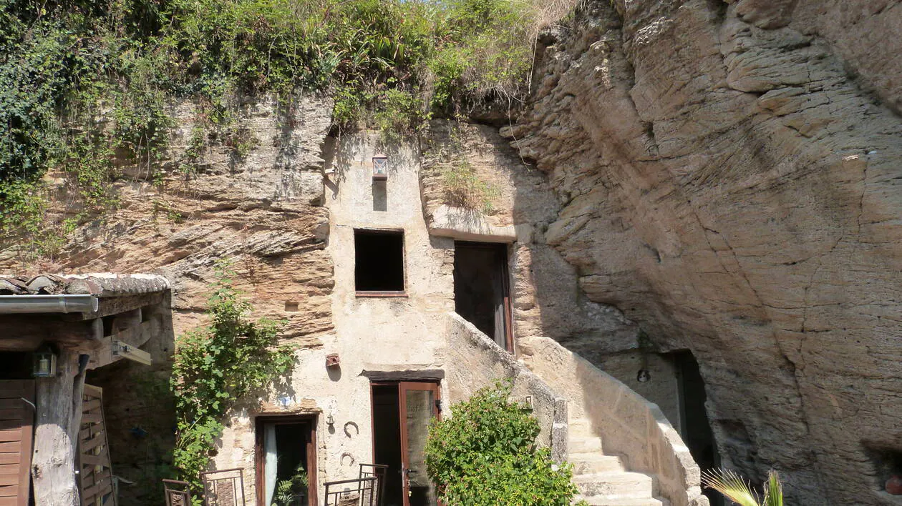
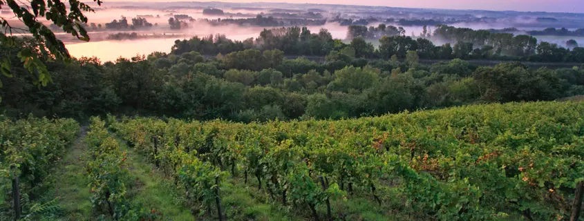

Le patrimoine saumurois, situé autour de Saumur, est riche et varié, mêlant histoire, architecture et traditions.
Dominé par le Château de Saumur, il témoigne du passé médiéval et royal de la région.
La ville est aussi connue pour son rôle dans l’École nationale d'équitation et le célèbre Cadre Noir.
Le patrimoine religieux est marqué par des églises anciennes comme église Saint-Pierre de Saumur.
Les habitations troglodytiques, creusées dans le tuffeau, sont caractéristiques du territoire.
De plus le Saumurois possède également de nombreux vignobles produisant des vins réputés.
La Loire, classée au patrimoine mondial de l’UNESCO, structure le paysage local.
Les traditions militaires sont importantes, notamment avec les écoles de cavalerie historiques.
Le patrimoine culturel comprend aussi musées et festivals qui animent la ville.
Enfin, l’ensemble du patrimoine saumurois reflète un équilibre entre nature, histoire et savoir-faire.
